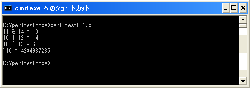

ビット演算子
ビット演算子とは数値に対してビット単位で演算を行うための演算子です。ビット演算子には次のものが用意されています。
| 演算子 | 記述例 | 意味 |
|---|---|---|
| & | a = b & 10 | ビットAND |
| | | a = b | 10 | ビットOR |
| ^ | a = b ^ 10 | ビットXOR |
| ~ | a = ~a | ビットNOT |
| << | a = a << 2 | 左シフト |
| >> | a = a >> 2 | 右シフト |
ビット演算子の中で左シフトと右シフトはシフト演算子とも呼ばれます。シフト演算子については次のページで確認します。ではそれぞれの演算子について確認してみます。
ビットAND
ビットANDは演算子の左辺と右辺の同じ位置にあるビットを比較して、両方のビットが共に「1」の場合だけ「1」にします。
例として「11」と「14」のビットANDを取ってみます。
1011 = 11 1110 = 14 ------------ 1010 = 10
対象となる数値の「11」と「14」をそれぞれ2進数で表します。そして各ビットを比較しますがビットANDの場合は両方の値のビットが「1」になっている場合は「1」を、それ以外は「0」とします。その結果、2進数の「1010」(10進数の「10」)と言う結果を取得することが出来ます。
my $var; $var = 11; $var = $var & 14;
上記の結果として変数「$var」には数値の「10」が格納されます。
ビットOR
ビットORは演算子の左辺と右辺の同じ位置にあるビットを比較して、両方のビットのどちらかが「1」の場合に「1」にします。
例として「10」と「12」のビットORを取ってみます。
1010 = 10 1100 = 12 ------------ 1110 = 14
対象となる数値の「10」と「12」をそれぞれ2進数で表します。そして各ビットを比較しますがビットORの場合はどちらかの値のビットが「1」になっている場合は「1」を、それ以外は「0」とします。その結果、2進数の「1110」(10進数の「14」)と言う結果を取得することが出来ます。
my $var; $var = 10; $var = $var | 12;
上記の結果として変数「$var」には数値の「14」が格納されます。
ビットXOR
ビットXORは演算子の左辺と右辺の同じ位置にあるビットを比較して、ビットの値が異なる場合にだけ「1」にします。
例として「10」と「12」のビットXORを取ってみます。
1010 = 10 1100 = 12 ------------ 0110 = 6
対象となる数値の「10」と「12」をそれぞれ2進数で表します。そして各ビットを比較しますがビットXORの場合は2つの値のビットの値が異なっている場合は「1」を、それ以外は「0」とします。その結果、2進数の「0110」(10進数の「6」)と言う結果を取得することが出来ます。
my $var; $var = 10; $var = $var ^ 12;
上記の結果として変数「$var」には数値の「6」が格納されます。
ビットNOT
ビットNOTは演算子の右辺の値の各ビットに対して「1」の場合は「0」に、「0」の場合は「1」にします。
例として「10」のビットNOTを取ってみます。
00000000000000000000000000001010 = 10 -------------------------------------- 11111111111111111111111111110101 = 4294967285
対象となる数値の「10」を2進数で表します。そしてビットNOTの場合はビットが「1」の場合は「0」に、ビットが「0」の場合は「1」とします。その結果、2進数の「11111111111111111111111111110101」(10進数の「4294967285」)と言う結果を取得することが出来ます。
ビットNOTの場合、整数として扱うことが出来る32ビットの値として反転します(64ビットマシンを使っていた場合は64ビットの値として反転させます)。「0101」となるわけでないので注意して下さい。
my $var; $var = 10; $var = ~$var;
上記の結果として変数「$var」には数値の「4294967285」が格納されます。
サンプルプログラム
では簡単なプログラムで確認して見ます。
use strict; use warnings; use utf8; binmode STDIN, ':encoding(cp932)'; binmode STDOUT, ':encoding(cp932)'; binmode STDERR, ':encoding(cp932)'; my ($src, $dst); $src = 11; $dst = $src & 14; print "$src ¥& 14 = $dst¥n"; $src = 10; $dst = $src | 12; print "$src | 12 = $dst¥n"; $src = 10; $dst = $src ^ 12; print "$src ^ 12 = $dst¥n"; $src = 10; $dst = ~$src; print "~$src = $dst¥n";
上記を「test6-1.pl」の名前で保存します(文字コードはUTF-8です)。そしてコマンドプロンプトを起動し、プログラムを保存したディレクトリに移動してから次のように実行して下さい。

( Written by Tatsuo Ikura )

著者 / TATSUO IKURA
初心者～中級者の方を対象としたプログラミング方法や開発環境の構築の解説を行うサイトの運営を行っています。